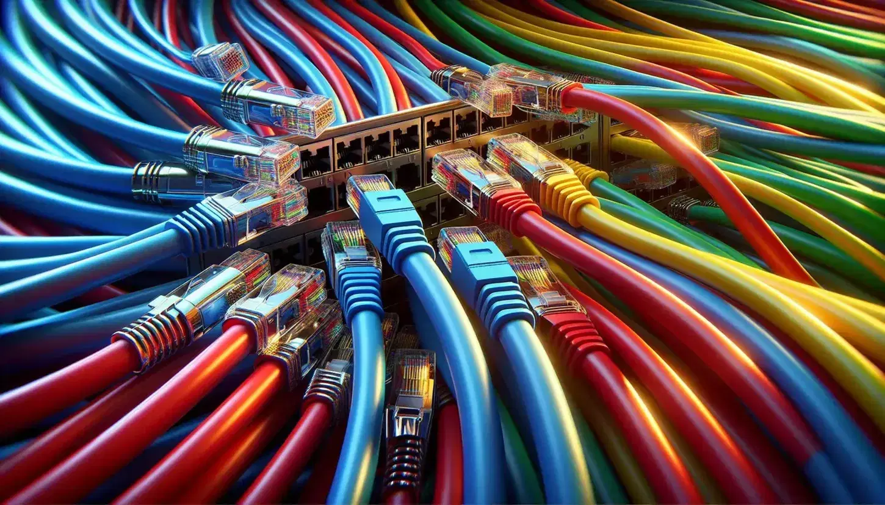
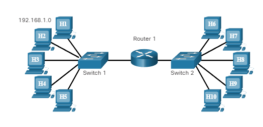
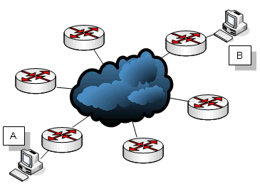
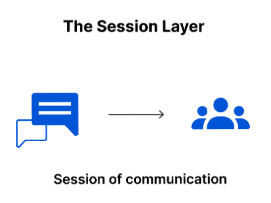
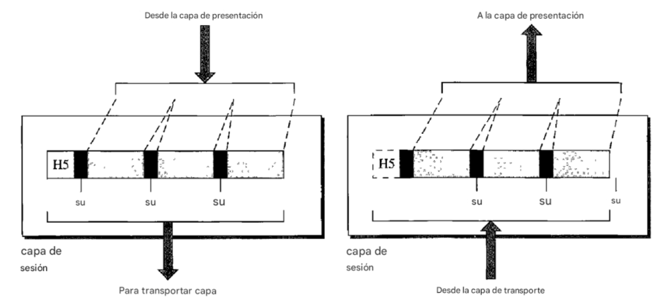

Capas del modelo OSI
Capa Física
La capa física coordina las funciones necesarias para transportar un flujo de bits a través de un medio físico. También define los procedimientos y funciones que deben realizar los dispositivos físicos y las interfaces para que se produzca la transmisión.
Características
Representación de bits: Los datos de la capa física consisten en un flujo de bits (secuencia de ceros o unos) sin interpretación.
Para poder transmitirse, los bits deben ser:■Codificados en señales eléctricas u ópticas
■Velocidad de datos
■Sincronización de bits
■Configuración de línea
■Topología física: La topología define como se conectan los dispositivos para formar una red
■Modo de transmisión
Capa de enlace de enlace de datos
La capa de enlace de datos transforma la capa física, una instalación de transmisión básica, en un enlace confiable. Hace que la capa física parezca libre de errores a la capa superior (capa de red).
Funciones
■Enmarcado
■Direccionamiento físico
■Control de flujo
■Control de errores
■Control de acceso
Capa de red
Es responsable de la entrega de un paquete desde el origen hasta el destino, posiblemente a través de múltiples redes (enlaces).
Funciones
■Direccionamiento lógico: Gestiona el problema de direccionamiento de forma local.
■Enrutamiento. Cuando se conectan redes o enlaces independientes para crear interredes (redes de redes) o una red grande, los dispositivos de conexión (llamados enrutadores)
Capa de transporte
Es responsable de la entrega de todo el mensaje de proceso a proceso. Garantiza que todo el mensaje llegue intacto y en orden, supervisando tanto el control de errores como el control de flujo en el nivel de origen a destino.
Funciones
■Direccionamiento de punto de servicio
■Segmentación y reensamblado
■Control de conexión
■Orientada a la conexión
■Control de flujo
■Control de errores
Capa de sesión
Es el controlador del diálogo de red. Establece, mantiene y sincroniza la interacción entre los sistemas que se comunican.
Funciones
■Control de dialogo
■Sincronización del dialogo
Capa de presentación
La capa de presentación se ocupa de la sintaxis y la semántica de la información intercambiada entre dos sistemas.
Capa de aplicación
Permite al usuario, ya sea humano o software, acceder a la red. Proporciona interfaces de usuario y soporte para servicios como correo electrónico, acceso y transferencia remota de archivos, gestión de bases de datos compartidas y otros tipos de servicios de información distribuida.
Funciones
■Terminal virtual de red
■Transferencia, acceso y gestión de archivos
■Servicios de correo
■Servicios de directorio